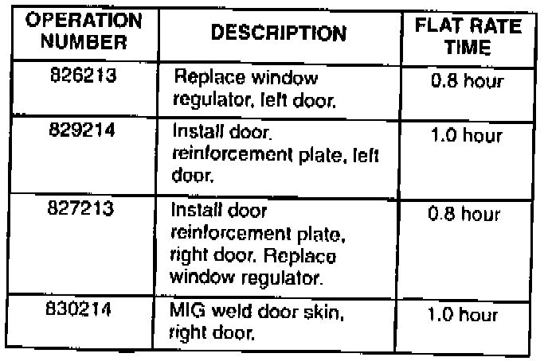
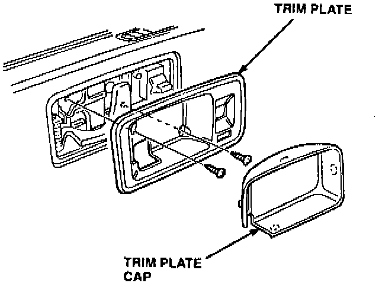
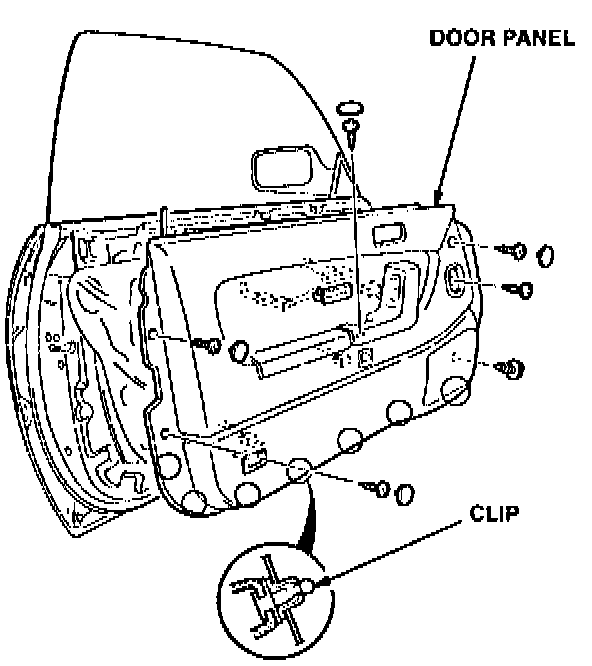
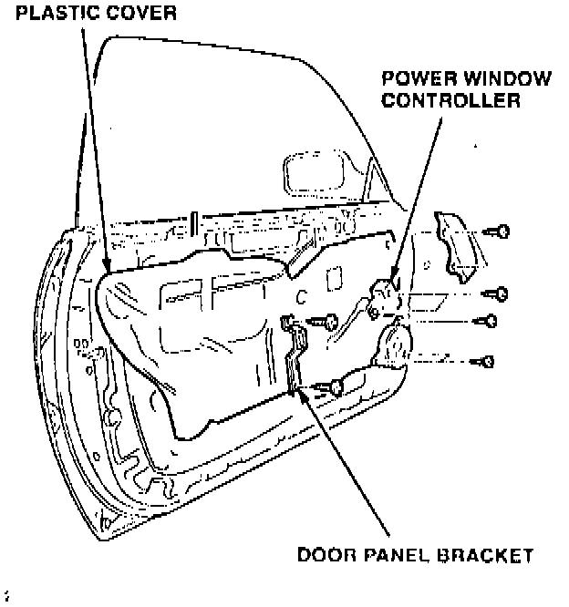
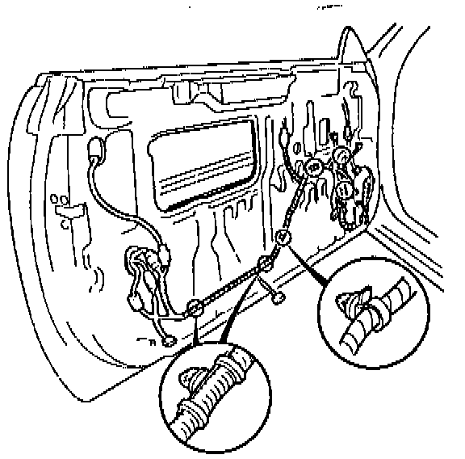
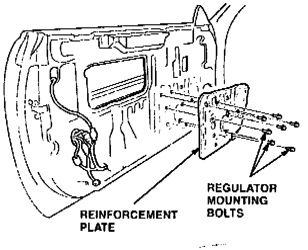
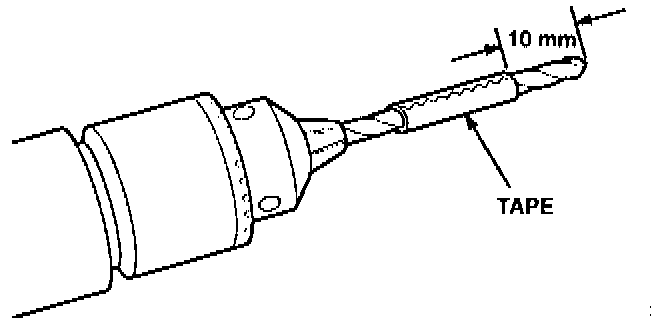
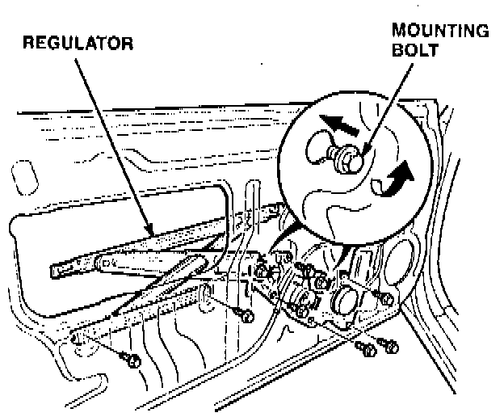
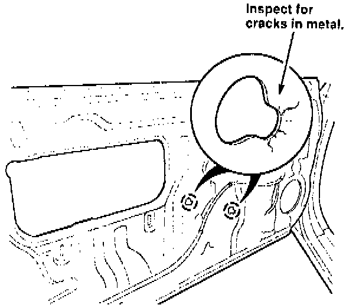

Front Window - Makes A Popping Noise Or Does Not Work
YEAR1987 - 90
MODEL
LEGEND COUPE
VIN APPLICATION
ALL
BULLETIN NO.
94-008
August 16, 1994
Front Window Makes a Popping Noise or Does Not Work
SYMPTOM
The power window in either door will not go up or down, or makes a loud popping noise when it reaches the top of its travel.
PROBABLE CAUSE
Frequent window use causes the inner door skin to crack at regulator mounting bolts. This stress can eventually cause the regulator to fail.
PARTS INFORMATION
Door reinforcement plate, left: P/N 67161-SG0-999
Door reinforcement plate, right: P/N 72212-SG0-000
WARRANTY CLAIM INFORMATION
In warranty:
The normal warranty applies.

Out of warranty:
Any repair performed after warranty expiration may be eligible for goodwill consideration by the District Technical Manager oryour Zone Office. You must request consideration, and get a decision, before starting work.
Failed P/N: 72250-SG0-A03 - left door
72210-SGO-A13 - right door
Defect code: 042
Contention code: B99
CORRECTIVE ACTION
Install a door reinforcement plate (see PARTS INFORMATION). Replace the window regulator if it has failed.
NOTE:
Failure of the left (driver's) side regulator is much more common due to more frequent use (toll booths, etc.). Repair the right (passenger's) side door only if the regulator has failed.
Driver's Door

1. Remove the door handle trim plate cap. Remove the screws, then carefully remove the trim plate.

2. Remove the door handle screw and six door panel screws, and loosen the door panel clips. Lift the door panel straight up off the sill. Disconnect the electrical connectors for the trunk opener switch, courtesy light, power window switches, and seat memory.

3. Remove the power window controller and door panel bracket. Use a razor blade to carefully cut the adhesive holding the plastic cover. Remove the plastic cover from the front half of the door.

4. Disconnect the wire harness ties from the door skin by squeezing the prongs on the back side of each tie. LS only. Remove the speaker.
If you are not replacing the window regulator, go to step 7.
5. Remove the door glass and window regulator. Refer to section 20 of the appropriate service manual.
6. Install the new window regulator and reinstall the door glass.

7. Remove the window regulator mounting bolts. Put the reinforcement plate in position and reinstall the mounting bolts.

8. Modify a # 30 drill bit so it cannot dhll any deeper than 10 mm. Use a piece of tape, piece of hose, or recess the bit into the chuck. Drilling too deep can damage components inside the door.
9. Using the reinforcement plate pre-drilled holes as a template, drill 16 holes in the inner door skin.
10. Pop rivet the reinforcement plate in place.
11. Adjust the door glass. Refer to Service Bulletin 88-023, Wind Noise from the Door Glass, dated December 21, 1988.
12. Reinstall the wire harness ties and the plastic cover.
13. Reinstall the speaker, door panel bracket, power window controller, door panel, door handle trim plate, and cap.
Passenger's Door
1. Remove the door panel. Use a razor blade to carefully cut the adhesive holding the plastic cover. Remove the plastic cover from the door.
2. Remove the window mounting nuts. Remove the window from the door.

3. Remove seven regulator mounting bolts. Loosen two motor mounting bolts. Remove the regulator from the door.

4. Inspect the inner door skin around the holes for the regulator mounting bolts. Use a MIG welder to repair any cracks in the metal.
5. Position the reinforcement on the inside of the door skin, between the skin and the regulator. Install the regulator and mounting bolts.
6. Install and adjust the door glass. Refer to Service Bulletin 88-023, Wind Noise from the Door Glass, dated December 21, 1988.
7. Reinstall the plastic cover and the door panel.